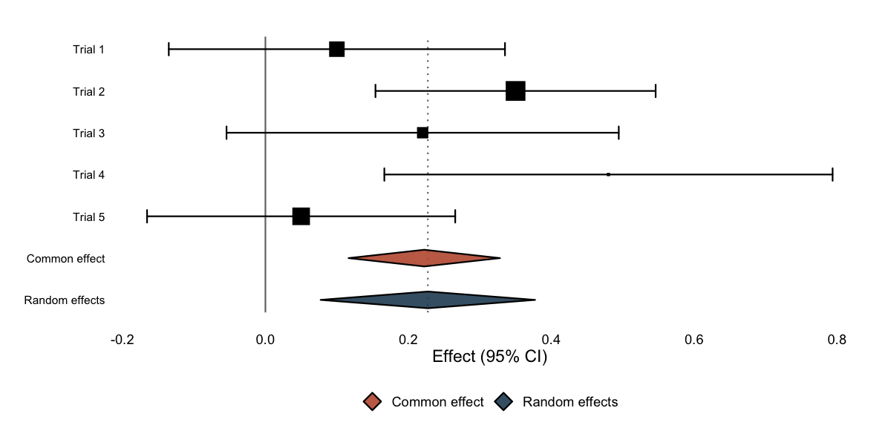
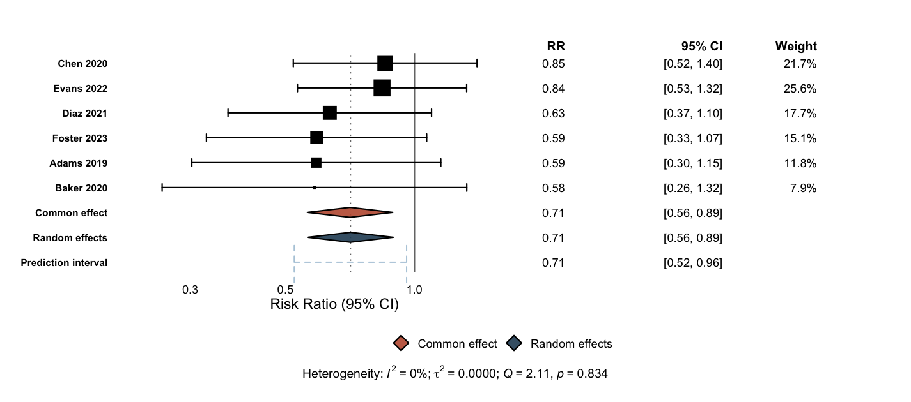
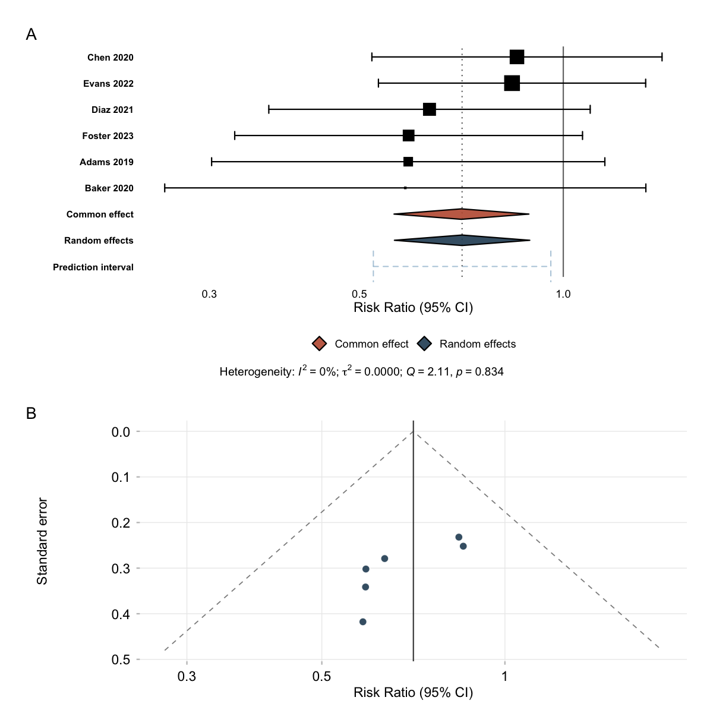
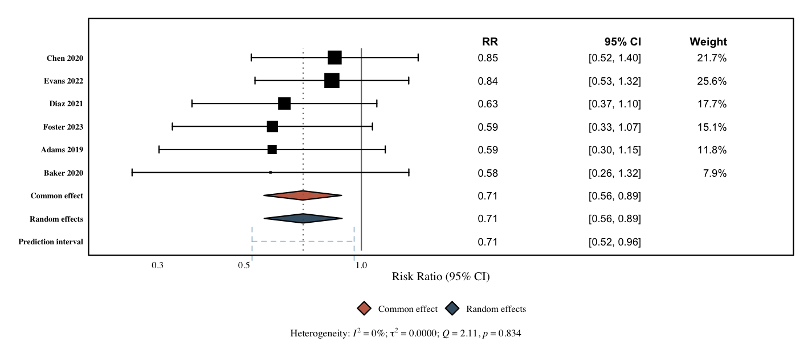

ggmeta builds publication-quality forest and funnel plots with ggplot2. Give it a meta object (from the meta package) or a plain tidy data frame — the result is an ordinary ggplot you can theme, compose, and save.
Quick start
No meta package required — a tidy data frame of effect sizes and standard errors is enough. Set add_summary = TRUE to pool the studies on the fly (inverse-variance common effect and DerSimonian–Laird random effects):
library(ggmeta)
studies <- data.frame(
studlab = c("Trial 1", "Trial 2", "Trial 3", "Trial 4", "Trial 5"),
estimate = c(0.10, 0.35, 0.22, 0.48, 0.05),
se = c(0.12, 0.10, 0.14, 0.16, 0.11)
)
studies$ci_lower <- studies$estimate - 1.96 * studies$se
studies$ci_upper <- studies$estimate + 1.96 * studies$se
ggforest(studies, add_summary = TRUE)
Estimates, CIs, weights, and heterogeneity
Pass a meta object and add columns = TRUE to reproduce the familiar meta::forest() table: an effect estimate, 95% CI, and weight column for every study and summary, headers, and a heterogeneity line (I², the between-study variance, Q, and p) — all as a plain ggplot.
library(meta)
#> Loading required package: metabook
#> Loading 'meta' package (version 8.5-0).
#> Type 'help(meta)' for a brief overview.
dat <- data.frame(
study = c("Adams 2019", "Baker 2020", "Chen 2020",
"Diaz 2021", "Evans 2022", "Foster 2023"),
event.e = c(12, 8, 25, 18, 30, 15), n.e = c(120, 90, 200, 150, 250, 130),
event.c = c(20, 14, 30, 28, 35, 25), n.c = c(118, 92, 205, 148, 245, 128)
)
m <- metabin(event.e, n.e, event.c, n.c,
data = dat, studlab = study, sm = "RR")
ggforest(m, columns = TRUE)
Everything is optional. Choose which columns to show, and toggle the other elements on or off:
ggforest(m, columns = c("estimate", "ci")) # only some columns
ggforest(m, effect_header = "Risk ratio") # rename the estimate column
ggforest(m, show_hetstats = FALSE) # hide the heterogeneity line
ggforest(m, show_predict = FALSE) # hide the prediction interval
ggforest(m, sort_studies = FALSE) # keep the input orderForest and funnel plots on one canvas
ggmeta also draws funnel plots with ggfunnel() (study effect vs. standard error, with pseudo confidence-interval contours). And because every plot is an ordinary ggplot, a forest and a funnel compose on a single figure with patchwork — something that is awkward with the base-graphics output of meta:
library(patchwork)
(ggforest(m) | ggfunnel(m)) +
plot_layout(widths = c(2, 1)) +
plot_annotation(tag_levels = "A")
Journal styles
Layout presets restyle a plot for common journals. They are ordinary ggplot2 components, so you add them with +:
layout_jama(ggforest(m, columns = TRUE))
layout_bmj() and layout_revman5() are also available.
Custom columns
For a column of your own — sample sizes, events, anything — use geom_forest_text(), aligned to the study rows through the shared y. tidy_meta() exposes the same tidy data frame ggforest() builds internally, and format_effect() builds "estimate (low to high)" labels:
td <- tidy_meta(m)
studies <- td[!td$is_summary, ]
ggforest(m) +
geom_forest_text(aes(y = studlab, label = n.e), data = studies,
x = 4, hjust = 0) +
expand_limits(x = 6)Why ggmeta?
-
ggplot2 native — add themes, layers, annotations, and facets; save with
ggsave(). -
Forest and funnel plots —
ggforest()andggfunnel(), both ordinary ggplots, so you can arrange them together with patchwork. -
meta::forest()-style tables — estimate / CI / weight columns and a heterogeneity caption, viacolumns = TRUE. -
Standalone or
meta— works on a tidy data frame or ametaobject, and can pool studies itself (add_summary = TRUE). - Correct by construction — every summary measure is back-transformed with its right inverse (ratios, logit proportions, Fisher-z correlations, rates).
-
Custom geometries — proper
ggprotogeoms for CIs, summary diamonds, prediction intervals, reference lines, and text columns. -
Journal styles —
layout_jama(),layout_bmj(),layout_revman5().
Learn more
-
vignette("getting-started")— a tour of the package. -
vignette("customising")— restyle every element of a forest or funnel plot. -
vignette("from-meta-forest")— coming frommeta::forest().